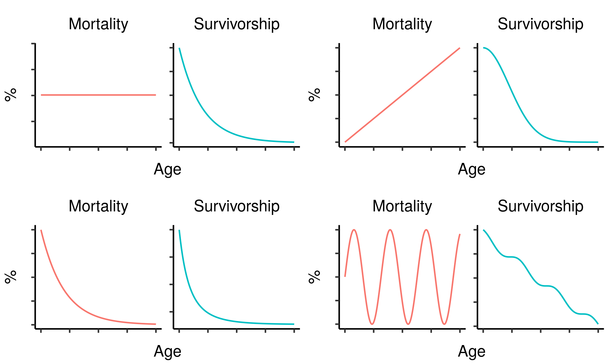
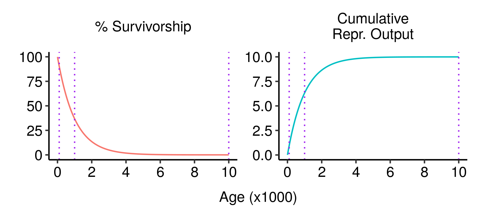
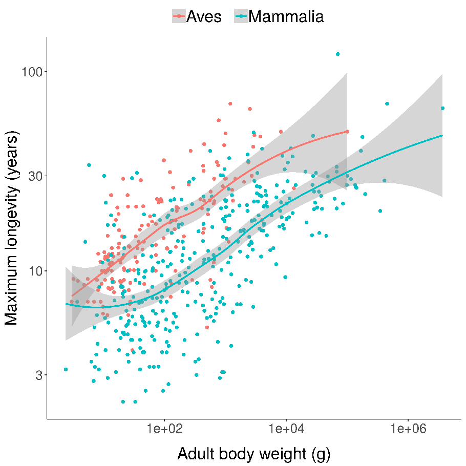

Follows from: Why We Age, Part 1; Evolution is Sampling Error; An addendum on effective population size
Last time, I introduced three puzzles in the evolution of ageing:
This, then, is the threefold puzzle of ageing. Why should a process that appears to be so deleterious to the individuals experiencing it have evolved to be so widespread in nature? Given this ubiquity, which implies there is some compelling evolutionary reason for ageing to exist, why do different animals vary so much in their lifespans? And how, when ageing has either evolved or been retained in so many different lineages, have some animals evolved to escape it?
I divided existing theories of the evolution of ageing into two groups, adaptive and nonadaptive, and discussed why one commonly believed nonadaptive theory – namely, simple wear and tear – could not adequately answer these questions.
In this post I’ll discuss other, more sophisticated non-adaptive theories. These theories are characterised by their assertion that ageing provides no fitness benefit to organisms, but rather evolves despite being deleterious to reproductive success. Despite the apparent paradoxicality of this notion, these theories are probably the most widely-believed family of explanations for the evolution of ageing among academics in the field; they’re also the group of theories I personally put the most credence in at present.
How can this be? How can something non-adaptive – even deleterious – have evolved and persisted in so many species across the animal kingdom? To answer this question, we need to understand a few important concepts from evolutionary biology, including genetic drift, relaxed purifying selection, and pleiotropy. First, though, we need to clarify some important terminology.
Mortality, survivorship, and fecundity
For the purposes of this post, a cohort is a group of individuals from the same population who were all born at the same time, i.e. they are of the same age. The survivorship of a cohort at a given age is the percentage of individuals surviving to that age, or equivalently the probability of any given individual surviving at least that long. Conversely, the mortality of a cohort at a given age is the probability of an individual from that cohort dying at that age, and not before or after.
Survivorship and mortality are therefore related, but distinct: survivorship is the result of accumulating mortality at all ages from birth to the age of interest1. As a result, the mortality and survivorship curves of a cohort will almost always look very different; in particular, while mortality can increase, decrease or stay the same as age increases, survivorship must always decrease. As one important example, constant mortality will give rise to an exponential decline in survivorship2.

Four hypothetical mortality curves and their corresponding survivorship curves.
In evolutionary terms, survival is only important insofar as it leads to reproduction. The age-specific fecundity of a cohort is the average number of offspring produced by an individual of that cohort at that age. Crucially, though, you need to survive to reproduce, so the actual number of offspring you are expected to produce at a given age needs to be downweighted in proportion to your probability of dying beforehand. This survival-weighted fecundity (let’s call it your age-specific reproductive output) can be found by multiplying the age-specific fecundity by the corresponding age-specific survivorship. Since this depends on survivorship, not mortality, it will tend to decline with age: a population with constant mortality and constant fecundity (i.e. no demographic ageing) will show reproductive output that declines exponentially along with survivorship.

Two hypothetical mortality/fecundity curves and their corresponding reproductive outputs.
The fitness of an individual is determined by their lifetime reproductive output (i.e. the total number of offspring they produce over their entire lifespan)4. Mutations that significantly decrease lifetime reproductive output will therefore be strongly opposed by natural selection. It seems mutations leading to ageing (i.e. an increase in mortality and decrease in fecundity with time) should be in that category. So why does ageing evolve?
What good is immortality?
Imagine a race of beautiful, immortal, ageless beings — let’s call them elves. Unlike we frail humans, elves don’t age: they exhibit constant mortality and constant fecundity. As a result, their age-specific survivorship and reproductive output both fall off exponentially with increasing age — far more slowly, in other words, than occurs in humans.
 Survivorship, cumulative fecundity and cumulative reproductive output curves for a population of elves with 1% fecundity and 0.1% mortality per year.
Survivorship, cumulative fecundity and cumulative reproductive output curves for a population of elves with 1% fecundity and 0.1% mortality per year.
Under the parameters I’ve used here (1% fecundity, 0.1% mortality), an elf has about a 50% chance of making it to 700 years old and a 10% chance of living to the spry old age of 2,300. An elf that makes it that far will have an average of 23 children over its life; 7 if it only makes it to the median lifespan of 700.
Since fecundity and mortality are constant, an elf that makes it to 3,000 will be just as fit and healthy then as they were as a mere stripling of 500, and will most likely still have a long and bright future ahead of them. Nevertheless, the chance of any given newborn elf making it that far is small (about 5%). This means that, even though an old elf could in principle have as many children as a much younger individual elf, the actual offspring in the population are mainly produced by younger individuals. Just over 50% of the lifetime expected reproductive output of a newborn elf is concentrated into its first 700 years; even though it could in principle live for millennia, producing children at the same rate all the while, its odds of reproducing are best early in life. You can, after all, only breed when you’re living.
This fact — that reproductive output is concentrated in early life even in the absence of ageing — has one very important consequence: natural selection cares much more about you when you’re young.
Natural selection is ageist
No genome is totally stable — mutations always occur. Let’s imagine that three mutations arise in our elven population. Each is fatal to its bearer, but with a time delay, analogous to Huntington’s disease or some other congenital diseases in humans. Each mutation has a different delay, taking effect respectively at 100, 1000, and 10000 years of age. What effect will these mutations have on their bearers’ fitness, and how well will they spread in the population?
 Three potential fatal mutations in the elven populations, and their effects on lifetime reproductive output.
Although all three mutations have similar impacts on an individual who lives long enough to experience them, from a fitness perspective they are very different. The first mutation is disastrous: almost 90% of wild-type individuals (those without the mutation) live past age 100, and a guaranteed death at that age would eliminate almost 90% of your expected lifetime reproductive output. The second mutation is still pretty bad, but less so: a bit over a third of wild-type individuals live to age 1000, and dying at that age would eliminate a similar proportion of your expected lifetime reproductive output. The third mutation, by contrast, has almost no expected effect: less than 0.005% of individuals make it to that age, and the effect on expected lifetime reproductive output is close to zero. In terms of fitness, the first mutation would be strenuously opposed by natural selection; the second would be at a significant disadvantage; and the third would be virtually neutral.
This extreme example illustrates a general principle:
The impact of a mutation on the fitness of an organism depends on both the magnitude of its effect and the proportion of total reproductive output affected.
— Williams 1957 5
Mutations that take effect later in life affect a smaller proportion of total expected reproductive output and so have a smaller selective impact, even if the size of the effect when they do take effect is just as strong. The same principle applies to mutations with less dramatic effects: those that affect early-life survival and reproduction have a big effect on fitness and will be strongly selected for or against, while those that take effect later will have progressively less effect on fitness and will thus be exposed to correspondingly weaker selection pressure. Put in technical language, the selection coefficient of a mutation depends upon the age at which it takes effect, with mutations affecting later life having coefficients closer to zero.
Evolution is sampling error, and selection is sampling bias. When the selection coefficient is close to zero, this bias is weak, and the mutation’s behaviour isn’t much different from that of a neutral mutation. As such, mutations principally affecting later-life fitness will act more like neutral mutations, and increase and decrease in frequency in the population with little regard for their effects on those individuals that do live long enough to experience them. As a result, while mutations affecting early life will be purged from the population by selection, those affecting late life will be allowed to accumulate through genetic drift. Since the great majority of mutations are negative, this will result in deteriorating functionality at older ages.
So our elves are sadly doomed to lose their immortality, unless something very weird is happening to cause them to keep it. Mutations impairing survival and reproduction early in life will be strenuously removed by natural selection, but those causing impairments later in life will accumulate, leading to a progressive increase in mortality and decline in fecundity. This might seem bad enough, but unfortunately there is more bad news on the horizon — because this isn’t the only way that nonadaptive ageing can evolve.
Perverse trade-offs
Imagine now that instead of a purely negative, Huntingdon-like mutation arising in our ageless elf population, a mutation arose that provided some fitness benefit early in life at the cost of some impairment later; perhaps promoting more investment in rapid growth and less in self-repair, or disposing the bearer more towards risky fights for mates. How would this new mutation behave in the population?
The answer depends on the magnitude of the early-life benefit granted by the mutation, as well as of its later-life cost. However, we already saw that in weighing this trade-off natural selection cares far more about fitness in early life than in later life; as such, even a mutation whose late-life cost far exceeded its early-life benefit in magnitude could be good for overall lifetime fitness, and hence have an increased chance of spreading and becoming fixed in the population. Over time, the accumulation of mutations like this could lead to ever-more-severe ageing in the population, even as the overall fitness of individuals in the population continues to increase.
This second scenario, in which the same mutation provides a benefit at one point in life and a cost at another, is known as antagonistic pleiotropy6. It differs from the mutation accumulation theory of ageing outlined above in that, while in the former case ageing arises primarily through genetic drift acting on late-life-affecting deleterious mutations, the latter proposes that ageing arises as a non-adaptive side effect of a fitness-increasing process. Both theories are “non-adaptive” in that the ageing that results is not in itself good for fitness, and both depend on the same basic insight: due to inevitably declining survivorship with age, the fitness effect of a change in survival or reproduction tends to decline as the age at which it takes effect increases.
Mutation accumulation and antagonistic pleiotropy have historically represented the two big camps of ageing theorists, and the theories have traditionally been regarded as being in opposition to each other. I’ve never really understood why, though: the basic insight required to understand both theories is the same, and conditions that gave rise to ageing via mutation accumulation could easily also give rise to additional ageing via antagonistic pleiotropy7. Importantly, both theories give the same kinds of answers to the other two key questions of ageing I discussed last time: why do lifespans differ between species, and why do some animals escape ageing altogether?
It’s the mortality, stupid
As explanations of ageing, both mutation accumulation and antagonistic pleiotropy depend on extrinsic mortality; that is, probability of death arising from environmental factors like predation or starvation. As long as extrinsic mortality is nonzero, survivorship will decline monotonically with age, resulting (all else equal) in weaker and weaker selection agains deleterious mutations affecting later ages. The higher the extrinsic mortality, the faster the decline in survivorship with age, and the more rapid the corresponding decline in selection strength.
 Age-specific survivorship as a function of different levels of constant extrinsic mortality.
Age-specific survivorship as a function of different levels of constant extrinsic mortality.
As a result, lower extrinsic mortality will generally result in slower ageing: your chance of surviving to a given age is higher, so greater functionality at that age is more valuable, resulting in a stronger selection pressure to maintain that functionality.
This is the basic explanation for why bats live so much longer than mice despite being so similar: they can fly, which protects them from predators, which reduces their extrinsic mortality.

You can see something similar if you compare all birds and all mammals, controlling for body size (being larger also makes it harder to eat you):
 Scatterplots of bird and mammal maximum lifespans vs adult body weight from the AnAge database, with central tendencies fit in R using local polynomial regression (LOESS).
In addition to body size and flight, you are also likely to have a longer lifespan if you are8:
- Arboreal
- Burrowing
- Poisonous
- Armoured
- Spiky
- Social
All of these factors share the property of making it harder to predate you, reducing extrinsic mortality. In many species, females live longer than males even in captivity: males are more likely to (a) be brightly coloured or otherwise ostentatious, increasing predation, and (b) engage in fights and other risky behaviour that increases the risk of injury. I’d predict that other factors that reduce extrinsic mortality in the wild (e.g. better immune systems, better wound healing) would similarly correlate with longer lifespans in safe captivity.
This, then, is the primary explanation non-adaptive ageing theories give for differences in rates of ageing between species: differences in extrinsic mortality. Mortality can’t explain everything, though: in particular, since mortality is always positive, resulting in strictly decreasing survivorship with increasing age, it can’t explain species that don’t age at all, or even age in reverse (with lower intrinsic mortality at higher ages).
It’s difficult to come up with a general theory for non-ageing species, many of which have quite ideosyncratic biology; one might say that all ageing species are alike, but every non-ageing species is non-ageing in its own way. But one way to get some of the way there is to notice that mortality/survivorship isn’t the only thing affecting age-specific reproductive output; age-specific fecundity also plays a crucial role. If fecundity increases in later ages, this can counterbalance, or even occasionally outweigh, the decline in survivorship and maintain the selective value of later life.
Mammals and birds tend to grow, reach maturity, and stop growing. Conversely, many reptile and fish species keep growing throughout their lives. As you get bigger, you can not only defend yourself better (reducing your extrinsic mortality), but also lay more eggs. As a result, fecundity in these species increases over time, resulting – sometimes – in delayed or even nonexistent ageing:
 Mortality (red) and fertility (blue) curves from the desert tortoise, showing declining mortality with time. Adapted from Fig. 1 of Jones et al. 2014.
Mortality (red) and fertility (blue) curves from the desert tortoise, showing declining mortality with time. Adapted from Fig. 1 of Jones et al. 2014.
So that’s one way a species could achieve minimal/negative senescence under non-adaptive theories of ageing: ramp up your fecundity to counteract the drop in survivorship. Another way would be to be under some independent selection pressure to develop systems (like really good tissue regeneration) that incidentally also counteract the ageing process. Overall, though, it seems to be hard to luck yourself into a situation that avoids the inexorable decline in selective value imposed by falling survivorship, and non-ageing animal species are correspondingly rare.
Next time in this series, we’ll talk about the other major group of theories of ageing: adaptive ageing theories. This post will probably be quite a long time coming since I don’t know anything about adaptive theories right now and will have to actually do some research. So expect a few other posts on different topics before I get around to talking about the more heterodox side of the theoretical biology of ageing.
-
In discrete time, the survivorship function of a cohort will be the product of instantaneous survival over all preceding time stages; in continuous time, it is the product integral of instantaneous survival up to the age of interest. Instantaneous survival is the probability of surviving at a given age, and thus is equal to 1 minus the mortality at that age. ↩
-
Exponential in continuous time; geometric in discrete time. ↩
-
The reproductive output \(r_a\) at some age \(a\) is therefore equal to \(f_a \cdot s_a\), where \(f\) is fecundity and \(s\) is survivorship. Since survivorship is determined by mortality, reproductive output can also be expressed as \(r_a = f_a \cdot \int_0^a m_x \:\mathrm{d}x\) (in continuous time) or \(r_a = f_a \cdot \prod_{k=0}^am_k\) (in discrete time). ↩
-
Lifetime reproductive output is equal to \(\int_0^\infty r_a \:\mathrm{d}a\) (in continuous time) or \(\sum_{a=0}^\infty r_a\) (in discrete time), where \(r_a\) is the age-specific reproductive output at age \(a\). ↩
-
Williams (1957) Evolution 11(4): 398-411. ↩
-
“Pleiotropy” is the phenomenon whereby a gene or mutation exerts effects of multiple different aspects of biology simultaneously: different genetic pathways, developmental stages, organ systems, et cetera. Antagonistic pleiotropy is pleiotropy that imposes competing fitness effects, increasing fitness in one way while decreasing it in another. ↩
-
Which of the two is likely to predominate depends on factors like the relative strength of selection and drift (which is heavily dependent on effective population size) and the commonness of mutations that cause effects of the kind proposed by antagonistic pleiotropy. ↩
-
My source for this is personal communication with Linda Partridge, one of the directors at my institute and one of the most eminent ageing scientists in the world. I’m happy to see any of these points contested if people think they have better evidence than an argument from authority. ↩
Comments